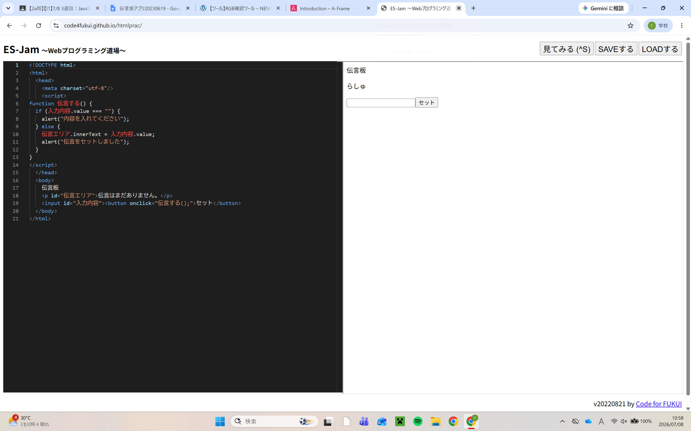

3-2 JavaScript体験：伝言プログラムを作る

伝言板
1.内容
JavaScriptを用いてWeb上で作動する伝言プログラムを作った。その中でこの言語でのルールなどを学んだ。また、使ってもらう人のことを考え、入力していない場合のプログラムを作った。
2.感想
先生が何度も何度も「使う人のことを考える」ということを言ってるのが印象に残った。自分が実際にwebで何かを閲覧するときに自分の予期していない動作が起きたら、イライラするだろうしそういう心がけは大事だなと思った。また、こういうプログラミング言語を用いてwebを高レベルに制作するのは時間がかかるだろうなと改めて実感した。こういうコードを実際に使えるようになってからじゃないと課題を解決する力は付けれないため、基礎を大切にしていきたい。